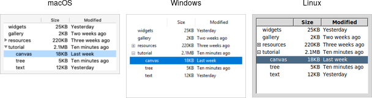

A treeview widget displays a hierarchy of items and allows users to browse through it. One or more attributes of each item can be displayed as columns to the right of the tree. It can be used to build user interfaces similar to the tree display you'd find in file managers like the macOS Finder or Windows Explorer. As with most Tk widgets, it offers incredible flexibility so it can be customized to suit a wide range of situations.

Treeview widgets.
Treeview widgets are created using the ttk.Treeview class:
tree = ttk.Treeview(parent)
Horizontal and vertical scrollbars can be added in the usual manner if desired.
To do anything useful with the treeview, we'll need to add one or more items to it. Each item represents a single node in the tree, whether a leaf node or an internal node containing other nodes. Items are referred to by a unique id. You can assign this id when the item is first created, or the widget can automatically generate one.
Items are created by inserting them into the tree, using the treeview's insert method. To
insert an item, we need to know where to insert it. That means specifying the parent item
and where within the list of the parent's existing children the new item should be inserted.
The treeview widget automatically creates a root node (which is not displayed). Its id is the empty string.
It serves as the parent of the first level of items that are added. Positions
within the list of a node's children are specified by index (0 being the first, and end
meaning insert after all existing children).
Normally, you'll also specify the name of each item, which is the text displayed in the tree. Other options allow you to add an image beside the name, specify whether the node is open or closed, etc.
# Inserted at the root, program chooses id:
tree.insert('', 'end', 'widgets', text='Widget Tour')
# Same thing, but inserted as first child:
tree.insert('', 0, 'gallery', text='Applications')
# Treeview chooses the id:
id = tree.insert('', 'end', text='Tutorial')
# Inserted underneath an existing node:
tree.insert('widgets', 'end', text='Canvas')
tree.insert(id, 'end', text='Tree')
Inserting the item returns the id of the newly created item.
A node (and its descendants, if any) can be moved to a different location in the tree. The only restriction is that a node cannot be moved underneath one of its descendants, for obvious reasons. As before, the target location is specified via an existing parent node, and a position within its list of children.
tree.move('widgets', 'gallery', 'end') # move widgets under galleryItems can be detached from the tree, which removes the item and its descendants from the hierarchy,
but does not destroy the items. This allows us to later reinsert them with move.
tree.detach('widgets')Items can also be deleted, which does completely destroy the item and its descendants.
tree.delete('widgets')To traverse the hierarchy, there are methods to find the parent of an item (parent item),
its next or previous sibling (next item and prev item), and return the list of children
of an item (children item).
We can control whether or not the item is open and shows its children by modifying the open item
configuration option.
tree.item('widgets', open=TRUE)
isopen = tree.item('widgets', 'open')
The treeview can display one or more additional pieces of information about each item. These are shown as columns to the right of the main tree display.
Each column is referenced by a symbolic name that we assign. We can specify the list of columns
using the columns configuration option of the treeview widget, either when first creating the
widget, or later on.
tree = ttk.Treeview(root, columns=('size', 'modified'))
tree['columns'] = ('size', 'modified', 'owner')
We can specify the width of the column, how the display of item information in the column is aligned, and more. We can also provide information about the heading of the column, such as the text to display, an optional image, alignment, and a script to invoke when the item is clicked (e.g. to sort the tree).
tree.column('size', width=100, anchor='center')
tree.heading('size', text='Size')
What to display in each column for each item can be specified individually by using the set
method. You can also provide a list describing what to display in all the columns for the item.
This is done using the values item configuration option. It can be used either when first inserting
the item or to update it later). It takes a list of values. The order of the list must be the same as the order
in the columns widget configuration option.
tree.set('widgets', 'size', '12KB')
size = tree.set('widgets', 'size')
tree.insert('', 'end', text='Listbox', values=('15KB', 'Yesterday', 'mark'))
Like the text and canvas widgets, the treeview widget uses tags to modify the
appearance of items in the tree. We can assign a list of tags to each item using the tags
item configuration option (again, when creating the item or later on).
Configuration options can then be specified on the tag, which will then apply to all items having that
tag. Valid tag options include foreground (text color), background,
font, and image (not used if the item specifies its own image).
We can also create event bindings on tags, which lets us capture mouse clicks, keyboard events etc.
tree.insert('', 'end', text='button', tags=('ttk', 'simple'))
tree.tag_configure('ttk', background='yellow')
tree.tag_bind('ttk', '<1>', itemClicked)
# the item clicked can be found via tree.focus()The treeview will generate virtual events <<TreeviewSelect>>, <<TreeviewOpen>>, and
<<TreeviewClose>>, which allow us to monitor changes to the widget made by users.
We can use the selection method to determine the current selection (the selection can also be changed
from your program).
There are many aspects of how the treeview widget is displayed that we can customize. We've already seen some of them, such as the text of items, fonts and colors, names of column headings, and more. Here are a few additional ones.
height widget configuration option.
width or minwidth options.
The column holding the tree can be accessed with the symbolic name #0. The overall requested
width for the widget is based on the sum of the column widths.
displaycolumns
widget configuration option.
show widget configuration option (default is "tree headings" to show both).
selectmode widget configuration option, passing browse (single item),
extended (multiple items, the default), or none.